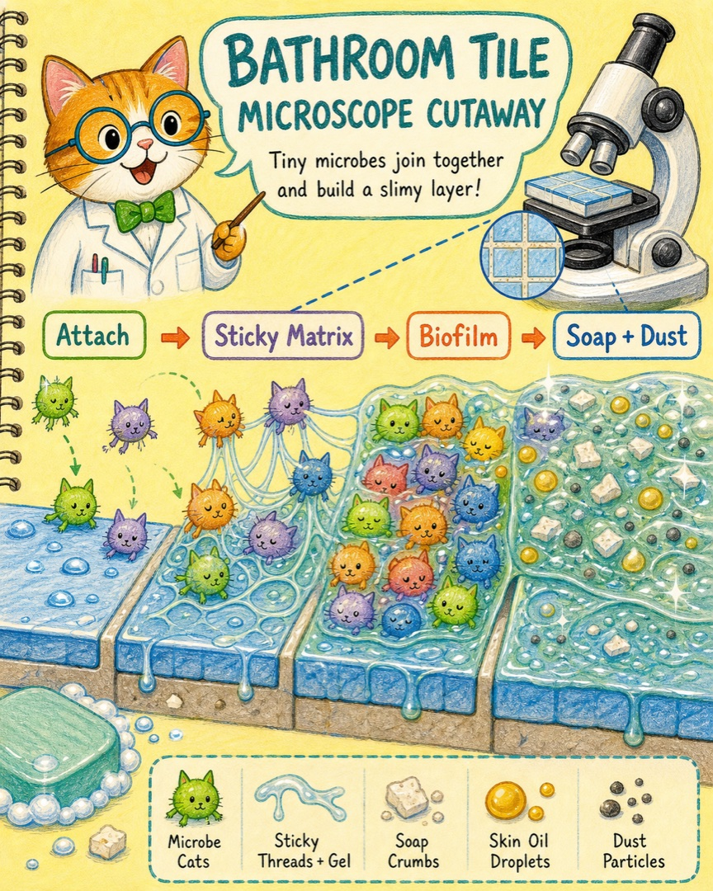
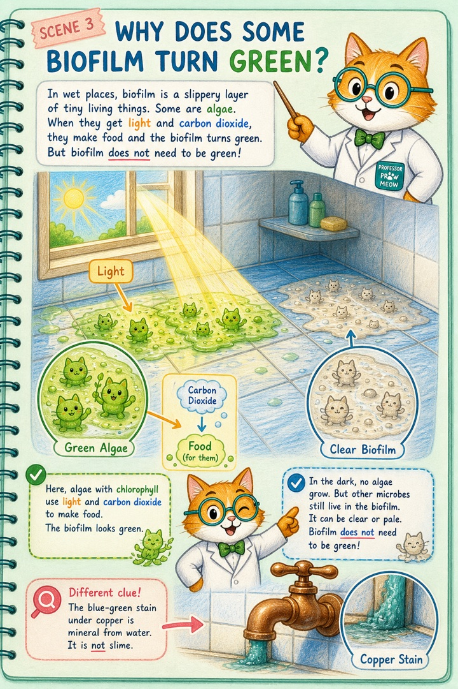
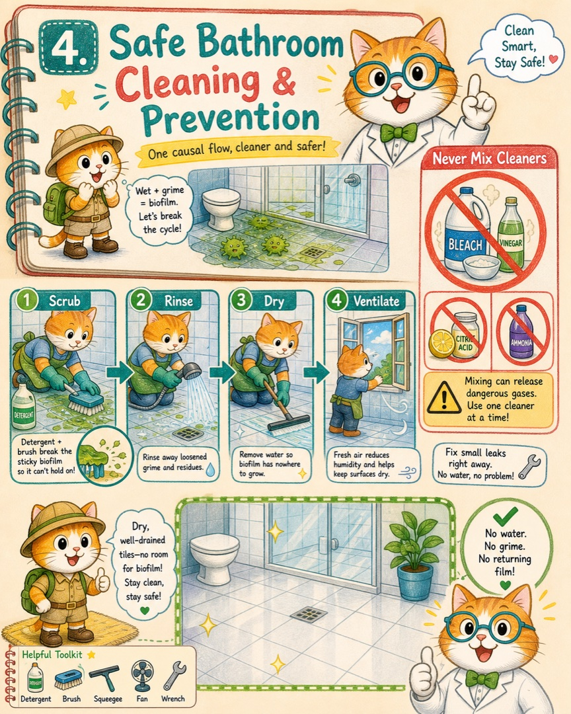
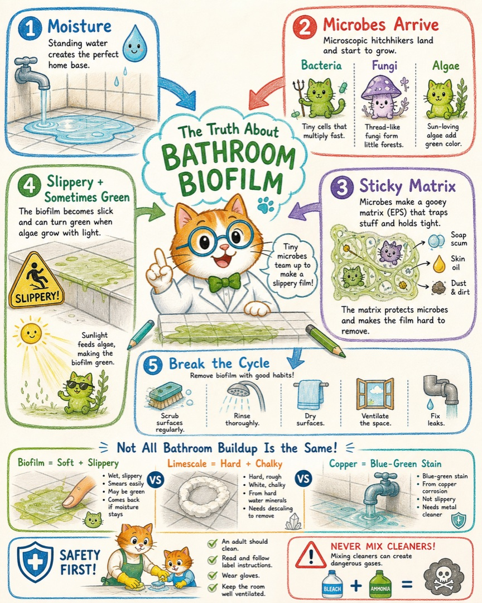

软、滑、会抹开
更像生物膜；见光处变绿时，藻类参与的可能性更高。
没有人往地上倒胶水，积水旁边为什么会自己长出一层滑滑的东西？它又为什么有时披上绿色外套？
在我们的世界里，那其实是许多微生物小猫，用自己分泌的黏胶搭起的一座潮湿公寓。
细菌小猫、真菌小猫和藻类小猫原本各自在水、空气和表面附近活动。它们没有总指挥，也不是为了弄脏浴室才集合。只是在一块长期有水、温度合适、还能捡到肥皂屑和皮脂小点心的表面上，留下来和繁殖的机会更大。



更像生物膜；见光处变绿时，藻类参与的可能性更高。
更像水垢，是钙镁等矿物留下的结晶硬壳。
若集中在铜龙头或铜管下方，可能是腐蚀产生的铜盐污渍。
滑是最直接的危险。脚踩上去，鞋底和地面之间的摩擦会变小，孩子、老人尤其容易摔倒。
多数健康人碰到普通浴室生物膜不一定会生病，但其中可能藏有机会致病的微生物。不要让它接触伤口、眼睛或隐形眼镜。
颜色不能告诉我们“有没有病菌”。看起来很绿的不一定最危险，看起来透明的也不等于没有微生物。家里有免疫力较弱的人，或污膜反复出现在储水、喷头和难清洁的管路中时，要更认真处理。

让大人处理湿滑地面。先在入口放好防滑提醒，戴手套，用适合瓷砖或地面的清洁剂和刷子清除黏膜，再充分冲洗、刮水和晾干。是否需要消毒、使用哪种产品，以产品标签和表面材质说明为准。
漂白剂绝不能与醋、柠檬酸、洁厕剂或含氨清洁剂混合。一次只用一种清洁产品，并保持通风。
积水时间更长、温暖、有光、残留物更多，生物膜通常长得更快；每天刮水、保持通风、修好漏水，它就会慢下来。
如果把光挡住，绿色藻类可能减少，但细菌和真菌组成的透明生物膜仍可能存在。所以“没有绿色”不等于“没有滑膜”，干燥才是更有力的断路开关。

请大人清洁浴室后，连续几天观察两件事：哪一处总是最后才干？哪一处最先恢复滑感？不要用手直接摸，可以在干燥时让大人用纸巾检查。如果“最晚干”和“最先滑”总在同一处，我们就抓到了水分这只关键小猫的脚印。